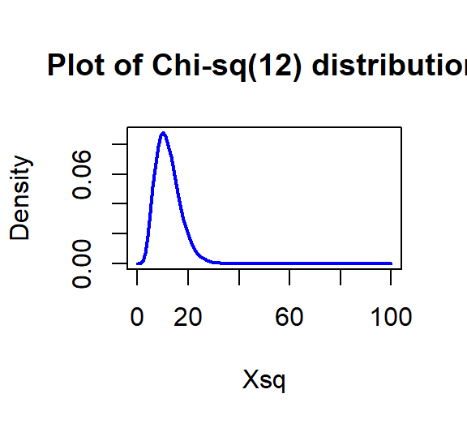
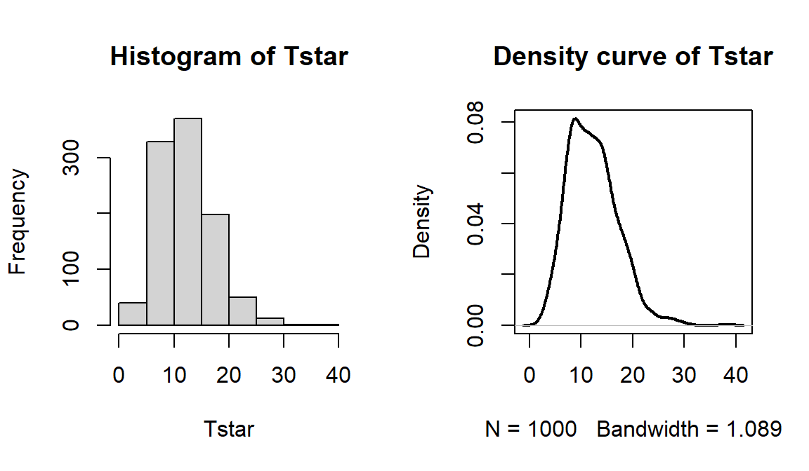
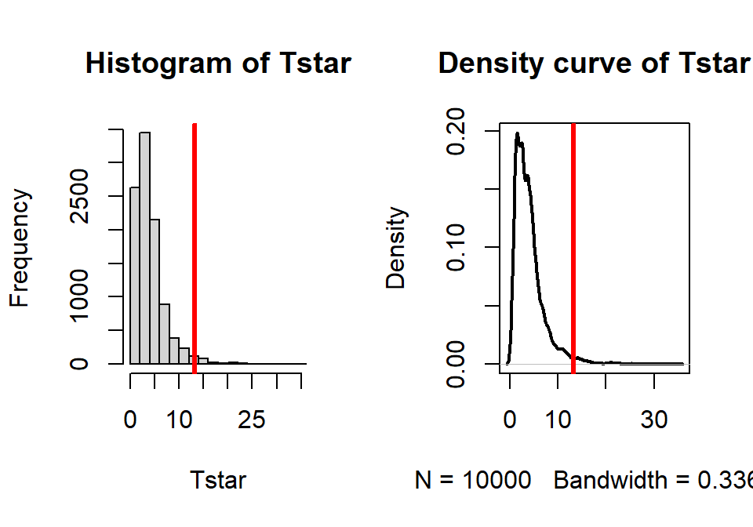

Chapter 5 Chi-square tests
5.1 Situation, contingency tables, and table plots
In this chapter, the focus shifts briefly from analyzing quantitative response variables to methods for handling categorical response variables. This is important because in some situations it is not possible to measure the response variable quantitatively. For example, we will analyze the results from a clinical trial where the results for the subjects were measured as one of three categories: no improvement, some improvement, and marked improvement. While that type of response could be treated as numerical, coded possibly as 1, 2, and 3, it would be difficult to assume that the responses such as those follow a normal distribution since they are discrete (not continuous, measured at whole number values only) and, more importantly, the difference between no improvement and some improvement is not necessarily the same as the difference between some and marked improvement. If it is treated numerically, then the differences between levels are assumed to be the same unless a different coding scheme is used (say 1, 2, and 5). It is better to treat these types of responses as being in one of the three categories and use statistical methods that don’t make unreasonable and arbitrary assumptions about what the numerical coding might mean. The study being performed here involved subjects randomly assigned to either a treatment or a placebo (control) group and we want to address research questions similar to those considered in Chapters 2 and 3 – assessing differences among two or more groups. With quantitative responses, the differences in the distributions are parameterized via the means of the groups and we used 2-sample mean or ANOVA hypotheses and tests. With categorical responses, the focus is on the probabilities of getting responses in each category and whether they differ among the groups.
We start with some useful summary techniques, both numerical and graphical, applied to some examples of studies these methods can be used to analyze. Graphical techniques provide opportunities for assessing specific patterns in variables, relationships between variables, and for generally understanding the responses obtained. There are many different types of plots and each can enhance certain features of data. We will start with a “fun” display, called a table plot, to help us understand some aspects of the results from a double-blind randomized clinical trial investigating a treatment for rheumatoid arthritis that has the categorical response variable introduced previously. These data are available in the Arthritis data set available in the vcd package (Meyer, Zeileis, and Hornik 2017). There were \(n=84\) subjects, with some demographic information recorded along with the Treatment status (Treated, Placebo) and whether the patients’ arthritis symptoms Improved (with levels of None, Some, and Marked).
The tableplot function from the tabplot package (Tennekes and de Jonge 2017) displays bars for each response in a row61 based on the category of responses or as a bar with the height corresponding the value of quantitative variables62. It also plots a red cell if the observations were missing on a particular variable. The plot can be obtained simply as tableplot(DATASETNAME). But when using tableplot, we may not want to display everything in the tibble and often just select some of the variables. We use Treatment, Improved, Sex, and Age in the select=... option with a c() and commas between the names of the variables we want to display as shown below. The first one in the list is also the one that the data are sorted based on.
require(vcd)
data(Arthritis) #Double-blind clinical trial with treatment and control groups
require(tibble)
Arthritis <- as.tibble(Arthritis)
#Homogeneity example
require(tabplot)
tableplot(Arthritis,select=c(Treatment,Improved,Sex,Age))Figure 5.1: Table plot of the arthritis data set.
The first thing we can gather from Figure 5.1 is that there are no red cells so there were no missing observations in the data set. Missing observations regularly arise in real studies when observations are not obtained for many different reasons and it is always good to check for missing data issues – this plot provides a quick visual method for doing that check. Primarily we are interested in whether the treatment led to a different pattern (or rates) of improvement responses. There seems to be more purple (Marked) improvement responses in the treatment group and more blue (None) responses in the placebo group. This sort of plot also helps us to simultaneously consider the role of other variables in the observed responses. You can see the sex of each subject in the vertical panel for Sex and it seems that there is a relatively balanced mix of males and females in the treatment/placebo groups. Quantitative variables are also displayed with horizontal bars corresponding to the responses (the x-axis provides the units of the responses, here in years). From the panel for Age, we can see that the ages of subjects ranged from the 20s to 70s and that there is no clear difference in the ages between the treated and placebo groups. If, for example, all the male subjects had ended up being randomized into the treatment group, then we might have worried about whether sex and treatment were confounded and whether any differences in the responses might be due to sex instead of the treatment. The random assignment of treatment/placebo to the subjects appears to have been successful here in generating a mix of ages and sexes among the two treatment groups63. The main benefit of this sort of plot is the ability to visualize more than two categorical variables simultaneously. But now we want to focus more directly on the researchers’ main question – does the treatment lead to different improvement outcomes than the placebo?
To directly assess the effects of the treatment, we want to display just the two variables of interest. Stacked bar charts provide a method of displaying the response patterns (in Improved) across the levels of a predictor variable (Treatment) by displaying a bar for each predictor variable level and the proportions of responses in each category of the response in each of those groups. If the placebo is as effective as the treatment, then we would expect similar proportions of responses in each improvement category. A difference in the effectiveness would manifest in different proportions in the different improvement categories between Treated and Placebo. To get information in this direction, we start with obtaining the counts in each combination of categories using the tally function to generate contingency tables. Contingency tables with R rows and C columns (called R by C tables) summarize the counts of observations in each combination of the explanatory and response variables. In these data, there are \(R=2\) rows and \(C=3\) columns making a \(2\times 3\) table – note that you do not count the row and column for the “Totals” in defining the size of the table. In the table, there seems to be many more Marked improvement responses (21 vs 7) and fewer None responses (13 vs 29) in the treated group compared to the placebo group.
require(mosaic)
tally(~Treatment+Improved, data=Arthritis, margins=T)## Improved
## Treatment None Some Marked Total
## Placebo 29 7 7 43
## Treated 13 7 21 41
## Total 42 14 28 84Using the tally function with ~x+y provides a contingency table with the x variable on the rows and the y variable on the columns, with margins=T as an option so we can obtain the totals along the rows, columns, and table total of \(N=84\). In general, contingency tables contain the counts \(n_{rc}\) in the \(r^{th}\) row and \(c^{th}\) column where \(r=1,\ldots,R\) and \(c=1,\ldots,C\). We can also define the row totals as the sum across the columns of the counts in row \(r\) as
\[\mathbf{n_{r\bullet}}=\Sigma^C_{c=1}n_{rc},\]
the column totals as the sum across the rows for the counts in column \(c\) as
\[\mathbf{n_{\bullet c}}=\Sigma^R_{r=1}n_{rc},\]
and the table total as
\[\mathbf{N}=\Sigma^R_{r=1}\mathbf{n_{r\bullet}} = \Sigma^C_{c=1}\mathbf{n_{\bullet c}} = \Sigma^R_{r=1}\Sigma^C_{c=1}\mathbf{n_{rc}}.\]
We’ll need these quantities to do some calculations in a bit. A generic contingency table with added row, column, and table totals just like the previous result from the tally function is provided in Table 5.1.
| Response Level 1 |
Response Level 2 |
Response Level 3 |
… |
Response Level C |
Totals |
|
|---|---|---|---|---|---|---|
| Group 1 | \(n_{11}\) | \(n_{12}\) | \(n_{13}\) | … | \(n_{1C}\) | \(\boldsymbol{n_{1 \bullet}}\) |
| Group 2 | \(n_{21}\) | \(n_{22}\) | \(n_{23}\) | … | \(n_{2C}\) | \(\boldsymbol{n_{2 \bullet}}\) |
| … | … | … | … | … | … | … |
| Group R | \(n_{R1}\) | \(n_{R2}\) | \(n_{R3}\) | … | \(n_{RC}\) | \(\boldsymbol{n_{R \bullet}}\) |
| Totals | \(\boldsymbol{n_{\bullet 1}}\) | \(\boldsymbol{n_{\bullet 2}}\) | \(\boldsymbol{n_{\bullet 3}}\) | … | \(\boldsymbol{n_{\bullet C}}\) | \(\boldsymbol{N}\) |
Comparing counts from the contingency table is useful, but comparing proportions in each category is better, especially when the sample sizes in the levels of the explanatory variable differ. Switching the formula used in the tally function formula to ~ y|x and adding the format="proportion" option provides the proportions in the response categories conditional on the category of the predictor (these are called conditional proportions or the conditional distribution of, here, Improved on Treatment)64. Note that they sum to 1.0 in each level of x, placebo or treated:
tally(~Improved|Treatment, data=Arthritis, format="proportion", margins=T)## Treatment
## Improved Placebo Treated
## None 0.6744186 0.3170732
## Some 0.1627907 0.1707317
## Marked 0.1627907 0.5121951
## Total 1.0000000 1.0000000This version of the tally result switches the variables between the rows and columns from the first summary of the data but the single “Total” row makes it clear to read the proportions down the columns in this version of the table. In this application, it shows how the proportions seem to be different among categories of Improvement between the placebo and treatment groups. This matches the previous thoughts on these data, but now a difference of marked improvement of 16% vs 51% is more clearly a big difference. We can also display this result using a stacked bar-chart that displays the same information using the plot function with a y~x formula:
plot(Improved~Treatment, data=Arthritis,
main="Stacked Bar Chart of Arthritis Data")Figure 5.2: Stacked bar chart of Arthritis data. The left bar is for the Placebo group and the right bar is for the Treated group. The width of the bars is based on relative size of each group and the portion of the total height of each shaded area is the proportion of that group in each category. The darkest shading is for “none”, medium shading for “some”, and the lightest shading for “marked”, as labeled on the y-axis.
The stacked bar-chart in Figure 5.2 displays the previous conditional proportions for the groups, with the same relatively clear difference between the groups persisting. If you run the plot function with variables that are coded numerically, it will make a very different looking graph (R is smart!) so again be careful that you are instructing R to treat your variables as categorical if they really are categorical. R is powerful but can’t read your mind!
In this chapter, we analyze data collected in two different fashions and modify the hypotheses to reflect the differences in the data collection processes, choosing either between what are called Homogeneity and Independence tests. The previous situation where levels of a treatment are randomly assigned to the subjects in a study describes the situation for what is called a Homogeneity Test. Homogeneity also applies when random samples are taken from each population of interest to generate the observations in each group of the explanatory variable based on the population groups. These sorts of situations resemble many of the examples from Chapter 3 where treatments were assigned to subjects. The other situation considered is where a single sample is collected to represent a population and then a contingency table is formed based on responses on two categorical variables. When one sample is collected and analyzed using a contingency table, the appropriate analysis is called an Independence or Association test. In this situation, it is not necessary to have variables that are clearly classified as explanatory or response although it is certainly possible. Data that often align with Independence testing are collected using surveys of subjects randomly selected from a single, large population. An example, analyzed below, involves a survey of voters and whether their party affiliation is related to who they voted for – the republican, democrat, or other candidate. There is clearly an explanatory variable of the Party affiliation but a single large sample was taken from the population of all likely voters so the Independence test needs to be applied. Another example where Independence is appropriate involves a study of student cheating behavior. Again, a single sample was taken from the population of students at a university and this determines that it will be an Independence test. Students responded to questions about lying to get out of turning in a paper and/or taking an exam (none, either, or both) and copying on an exam and/or turning in a paper written by someone else (neither, either, or both). In this situation, it is not clear which variable is response or explanatory (which should explain the other) and it does not matter with the Independence testing framework. Figure 5.3 contains a diagram of the data collection processes and can help you to identify the appropriate analysis situation.

Figure 5.3: Diagram of the scenarios involved in Homogeneity and Independence tests. Homogeneity testing involves R random samples or subjects assigned to R groups. Independence testing involves a single random sample and measurements on two categorical variables.
You will discover that the test statistics are the same for both methods, which can create some desire to assume that the differences in the data collection doesn’t matter. In Homogeneity designs, the sample size in each group \((\mathbf{n_{1\bullet}},\mathbf{n_{2\bullet},\ldots,\mathbf{n_{R\bullet}}})\) is fixed. In Independence situations, the total sample size \(\mathbf{N}\) is fixed but all the \(\mathbf{n_{r\bullet}}\text{'s}\) are random. These differences impact the graphs, hypotheses, and conclusions used even though the test statistics and p-values are calculated the same way – so we only need to learn one test statistic to handle the two situations, but we need to make sure we know which we’re doing!
5.2 Homogeneity test hypotheses
If we define some additional notation, we can then define hypotheses that allow us to assess evidence related to whether the treatment “matters” in Homogeneity situations. This situation is similar to what we did in the One-Way ANOVA situation with quantitative responses in Chapter 3 but the parameters now relate to proportions in the response variable categories across the groups. First we can define the conditional population proportions in level \(c\) (column \(c=1,\ldots,C\)) of group \(r\) (row \(r=1,\ldots,R\)) as \(p_{rc}\). Table 5.2 shows the proportions, noting that the proportions in each row sum to 1 since they are conditional on the group of interest. A transposed (rows and columns flipped) version of this table is produced by the tally function if you use the formula ~y|x.
| Response Level 1 |
Response Level 2 |
Response Level 3 |
… |
Response Level C |
Totals |
|
|---|---|---|---|---|---|---|
| Group 1 | \(p_{11}\) | \(p_{12}\) | \(p_{13}\) | … | \(p_{1C}\) | \(\boldsymbol{1.0}\) |
| Group 2 | \(p_{21}\) | \(p_{22}\) | \(p_{23}\) | … | \(p_{2C}\) | \(\boldsymbol{1.0}\) |
| … | … | … | … | … | … | … |
| Group R | \(p_{R1}\) | \(p_{R2}\) | \(p_{R3}\) | … | \(p_{RC}\) | \(\boldsymbol{1.0}\) |
| Totals | \(\boldsymbol{p_{\bullet 1}}\) | \(\boldsymbol{n_{\bullet 2}}\) | \(\boldsymbol{p_{\bullet 3}}\) | … | \(\boldsymbol{p_{\bullet C}}\) | \(\boldsymbol{1.0}\) |
In the Homogeneity situation, the null hypothesis is that the distributions are the same in all the \(R\) populations. This means that the null hypothesis is:
\[\begin{array}{rl} \mathbf{H_0:}\ & \mathbf{p_{11}=p_{21}=\ldots=p_{R1}} \textbf{ and } \mathbf{p_{12}=p_{22}=\ldots=p_{R2}} \textbf{ and } \mathbf{p_{13}=p_{23}=\ldots=p_{R3}} \\ & \textbf{ and } \mathbf{\ldots} \textbf{ and }\mathbf{p_{1C}=p_{2C}=\ldots=p_{RC}}. \\ \end{array}\]
If all the groups are the same, then they all have the same conditional proportions and we can more simply write the null hypothesis as:
\[\mathbf{H_0:(p_{r1},p_{r2},\ldots,p_{rC})=(p_1,p_2,\ldots,p_C)} \textbf{ for all } \mathbf{r}.\]
In other words, the pattern of proportions across the columns are the same for all the \(\mathbf{R}\) groups. The alternative is that there is some difference in the proportions of at least one response category for at least one group. In slightly more gentle and easier to reproduce words, equivalently, we can say:
- \(\mathbf{H_0:}\) The population distributions of the responses for variable \(\mathbf{y}\) are the same across the \(\mathbf{R}\) groups.
The alternative hypothesis is then:
- \(\mathbf{H_A:}\) The population distributions of the responses for variable \(\mathbf{y}\) are NOT ALL the same across the \(\mathbf{R}\) groups.
To make this concrete, consider what the proportions could look like if they satisfied the null hypothesis for the Arthritis example, as displayed in Figure 5.4.
Figure 5.4: Plot of one way that the Arthritis proportions could have been if the null hypothesis had been true.
Note that the proportions in the different response categories do not need to be the same just that the distribution needs to be the same across the groups. The null hypothesis does not require that all three response categories (none, some, marked) be equally likely. It assumes that whatever the distribution of proportions is across these three levels that there is no difference in that distribution between the explanatory variable (here treated/placebo) groups. Figure 5.4 shows an example of a situation where the null hypothesis is true and the distributions of responses across the groups look the same but the proportions for none, some and marked are not all equally likely. That situation satisfies the null hypothesis. Compare this plot to the one for the real data set in Figure 5.2. It looks like there might be some differences in the responses between the treated and placebo groups as that plot looks much different from this one, but we will need a test statistic and a p-value to fully address the evidence relative to the previous null hypothesis.
5.3 Independence test hypotheses
When we take a single random sample of size \(N\) and make a contingency table, our inferences relate to whether there is a relationship or association (that they are not independent) between the variables. This is related to whether the distributions of proportions match across rows in the table but is a more general question since we do not need to determine a variable to condition on, one that takes on the role of an explanatory variable, from the two variables of interest. In general, the hypotheses for an Independence test for variables \(x\) and \(y\) are:
\(\mathbf{H_0}\): There is no relationship between \(\mathbf{x}\) and \(\mathbf{y}\) in the population.
- Or: \(H_0\): \(x\) and \(y\) are independent in the population.
\(\mathbf{H_A}\): There is a relationship between \(\mathbf{x}\) and \(\mathbf{y}\) in the population.
- Or: \(H_A\): \(x\) and \(y\) are dependent in the population.
To illustrate a test of independence, consider an example involving data from a national random sample taken prior to the 2000 US elections from the data set election from the package poLCA (Linzer and Lewis. (2014), Linzer and Lewis (2011)). Each respondent’s democratic-republican partisan identification was collected, provided in the PARTY variable for measurements on a seven-point scale from (1) Strong Democrat, (2) Weak Democrat, (3) Independent-Democrat, (4) Independent-Independent, (5) Independent-Republican, (6) Weak Republican, to (7) Strong Republican. The VOTEF variable that is created below will contain the candidate that the participants voted for (the data set was originally coded with 1, 2, and 3 for the candidates and we replaced those levels with the candidate names). The contingency table shows some expected results, that individuals with strong party affiliations tend to vote for the party nominee with strong support for Gore in the democrats (PARTY = 1 and 2) and strong support for Bush in the republicans (PARTY = 6 and 7). As always, we want to support our explorations with statistical inferences, here with the potential to extend inferences to the overall population of voters. The inferences in an independence test are related to whether there is a relationship between the two variables in the population. A relationship between variables occurs when knowing the level of one variable for a person, say that they voted for Gore, informs the types of responses that you would expect for that person, here that they are likely affiliated with the Democratic Party. When there is no relationship (the null hypothesis here), knowing the level of one variable is not informative about the level of the other variable.
require(poLCA)
# 2000 Survey - use package="" because other data sets in R have same name
data(election, package="poLCA")
election <- as.tibble(election)
# Subset variables and remove missing values
election2 <- na.omit(election[,c("PARTY","VOTE3")])
election2$VOTEF <- factor(election2$VOTE3)
levels(election2$VOTEF) <- c("Gore","Bush","Other")
levels(election2$VOTEF)## [1] "Gore" "Bush" "Other"electable <- tally(~PARTY+VOTEF, data=election2)
electable## VOTEF
## PARTY Gore Bush Other
## 1 238 6 2
## 2 151 18 1
## 3 113 31 13
## 4 37 37 11
## 5 21 124 12
## 6 20 121 2
## 7 3 189 1The hypotheses for an Independence/Association Test here are:
\(H_0\): There is no relationship between party affiliation and voting status in the population.
- Or: \(H_0\): Party affiliation and voting status are independent in the population.
\(H_A\): There is a relationship between party affiliation and voting status in the population.
- Or: \(H_A\): Party affiliation and voting status are dependent in the population.
You could also write these hypotheses with the variables switched and that is also perfectly acceptable. Because these hypotheses are ambivalent about the choice of a variable as an “x” or a “y”, the summaries of results should be consistent with that idea. We should not calculate conditional proportions or make stacked bar charts since they imply a directional relationship from x to y (or results for y conditional on the levels of x) that might be hard to justify. Our summaries in these situations are the contingency table (tally(~var1+var2, data=DATASETNAME)) and a new graph called a mosaic plot (using the mosaicplot function).
Mosaic plots display a box for each cell count whose area corresponds to the proportion of the total data set that is in that cell \((n_{rc}/\mathbf{N})\). In some cases, the bars can be short or narrow if proportions of the total are small and the labels can be hard to read but the same bars or a single line exist for each category of the variables in all rows and columns. The mosaic plot makes it easy to identify the most common combination of categories. For example, in Figure 5.5 the Gore and PARTY = 1 (Strong Democrat) box in the top segment under column 1 of the plot has the largest area so is the highest proportion of the total. Similarly, the middle segment on the right for the PARTY category 7s corresponds to the Bush voters who were a 7 (Strong Republican). Knowing that the middle box in each column is for Bush voters is a little difficult as “Other” and “Bush” overlap each other in the y-axis labeling but it is easy enough to sort out the story here if we have briefly explored the contingency table. We can also get information about the variable used to make the columns as the width of the columns is proportional to the number of subjects in each PARTY category in this plot. There were relatively few 4s (Independent-Independent responses) in total in the data set. Also, the Other category was the highest proportion of any vote-getter in the PARTY = 4 column but there were actually slightly more Other votes out of the total in the 3s (Independent-Democrat) party affiliation. Comparing the size of the 4s & Other segment with the 3s & Other segment, one should conclude that the 3s & Other segment is a slightly larger portion of the total data set. There is generally a gradient of decreasing/increasing voting rates for the two primary candidates across the party affiliations, but there are a few exceptions. For example, the proportion of Gore voters goes up slightly between the PARTY affiliations of 5s and 6s – as the voters become more strongly republican. To have evidence of a relationship, there just needs to be a pattern of variation across the plot of some sort but it does not need to follow such an easily described pattern, especially when the categorical variables do not contain natural ordering.
The mosaic plots are best made on the tables created by the tally function from a table that just contains the counts (no totals):
# Makes a mosaic plot where areas are related to the proportion of
# the total in the table
mosaicplot(electable) 
Figure 5.5: Mosaic plot of the 2000 election data comparing party affiliation and voting results.
In general, the results here are not too surprising as the respondents became more heavily republican, they voted for Bush and the same pattern occurs as you look at more democratic respondents. As the voters leaned towards being independent, the proportion voting for “Other” increased. So it certainly seems that there is some sort of relationship between party affiliation and voting status. As always, it is good to compare the observed results to what we would expect if the null hypothesis is true. Figure 5.6 assumes that the null hypothesis is true and shows the variation in the proportions in each category in the columns and variation in the proportions across the rows, but displays no relationship between PARTY and VOTEF. Essentially, the pattern down a column is the same for all the columns or vice-versa for the rows. The way to think of “no relationship” here would involve considering whether knowing the party level could help you predict the voting response and that is not the case in Figure 5.6 but was in certain places in Figure 5.5.
Figure 5.6: Mosaic plot of what the 2000 election data would look like if the null hypothesis of no relationship were true.
5.4 Models for R by C tables
This section is very short in this chapter because we really do not use any “models” in this material. There are some complicated statistical models that can be employed in these situations, but they are beyond the scope of this book. What we do have in this situation is our original data summary in the form of a contingency table, graphs of the results like those seen above, a hypothesis test and p-value (presented below), and some post-test plots that we can use to understand the “source” of any evidence we found in the test.
5.5 Permutation tests for the \(X^2\) statistic
In order to assess the evidence against our null hypotheses of no difference in distributions or no relationship between the variables, we need to define a test statistic and find its distribution under the null hypothesis. The test statistic used with both types of tests is called the \(\mathbf{X^2}\) statistic (we want to call the statistic X-squared not Chi-squared). The statistic compares the observed counts in the contingency table to the expected counts under the null hypothesis, with large differences between what we observed and what we expect under the null leading to evidence against the null hypothesis. To help this statistic to follow a named parametric distribution and provide some insights into sources of interesting differences from the null hypothesis, we standardize65 the difference between the observed and expected counts by the square-root of the expected count. The \(\mathbf{X^2}\) statistic is based on the sum of squared standardized differences,
\[\boldsymbol{X^2 = \Sigma^{RC}_{i=1}\left(\frac{Observed_i-Expected_i} {\sqrt{Expected_i}}\right)^2},\]
which is the sum over all (\(R\) times \(C\)) cells in the contingency table of the square of the difference between observed and expected cell counts divided by the square root of the expected cell count. To calculate this test statistic, it useful to start with a table of expected cell counts to go with our contingency table of observed counts. The expected cell counts are easiest to understand in the homogeneity situation but are calculated the same in either scenario.
The idea underlying finding the expected cell counts is to find how many observations we would expect in category \(c\) given the sample size in that group, \(\mathbf{n_{r\bullet}}\), if the null hypothesis is true. Under the null hypothesis across all \(R\) groups the conditional probabilities in each response category must be the same. Consider Figure 5.7 where, under the null hypothesis, the probability of None, Some, and Marked are the same in both treatment groups. Specifically we have \(\text{Pr}(None)=0.5\), \(\text{Pr}(Some)=0.167\), and \(\text{Pr}(Marked)=0.333\). With \(\mathbf{n_{Placebo\bullet}}=43\) and \(\text{Pr}(None)=0.50\), we would expect \(43*0.50=21.5\) subjects to be found in the Placebo, None combination if the null hypothesis were true. Similarly, with \(\text{Pr}(Some)=0.167\), we would expect \(43*0.167=7.18\) in the Placebo, Some cell. And for the Treated group with \(\mathbf{n_{Treated\bullet}}=41\), the expected count in the Marked improvement group would be \(41*0.333=13.65\). Those conditional probabilities came from aggregating across the rows because, under the null, the row (Treatment) should not matter. So, the conditional probability was actually calculated as \(\mathbf{n_{\bullet c}/N}\) = total number of responses in category \(c\) divided by the table total. Since each expected cell count was a conditional probability times the number of observations in the row, we can re-write the expected cell count formula for row \(r\) and column \(c\) as:
\[\mathbf{Expected\ cell\ count_{rc} = \frac{(n_{r\bullet}*n_{\bullet c})}{N}} = \frac{(\text{row } r \text{ total }*\text{ column } c \text{ total})} {\text{table total}}.\]
Table 5.3 demonstrates the calculations of the expected cell counts using this formula for all 6 cells in the \(2\times 3\) table.
Figure 5.7: Stacked bar chart that could occur if the null hypothesis were true for the Arthritis study.
| None | Some | Marked | Totals | |
|---|---|---|---|---|
| Placebo | \(\boldsymbol{\dfrac{n_{\text{Placebo}\bullet}*n_{\bullet\text{None}}}{N}}\) \(\boldsymbol{=\dfrac{43*42}{84}}\) \(\boldsymbol{=\color{red}{\mathbf{21.5}}}\) |
\(\boldsymbol{\dfrac{n_{\text{Placebo}\bullet}*n_{\bullet\text{Some}}}{N}}\) \(\boldsymbol{=\dfrac{43*14}{84}}\) \(\boldsymbol{=\color{red}{\mathbf{7.167}}}\) |
\(\boldsymbol{\dfrac{n_{\text{Placebo}\bullet}*n_{\bullet\text{Marked}}}{N}}\) \(\boldsymbol{=\dfrac{43*28}{84}}\) \(\boldsymbol{=\color{red}{\mathbf{14.33}}}\) |
\(\boldsymbol{n_{\text{Placebo}\bullet}=43}\) |
| Treated | \(\boldsymbol{\dfrac{n_{\text{Treated}\bullet}*n_{\bullet\text{None}}}{N}}\) \(\boldsymbol{=\dfrac{41*42}{84}}\) \(\boldsymbol{=\color{red}{\mathbf{20.5}}}\) |
\(\boldsymbol{\dfrac{n_{\text{Treated}\bullet}*n_{\bullet\text{Some}}}{N}}\) \(\boldsymbol{=\dfrac{41*14}{84}}\) \(\boldsymbol{=\color{red}{\mathbf{6.83}}}\) |
\(\boldsymbol{\dfrac{n_{\text{Treated}\bullet}*n_{\bullet\text{Marked}}}{N}}\) \(\boldsymbol{=\dfrac{41*28}{84}}\) \(\boldsymbol{=\color{red}{\mathbf{13.67}}}\) |
\(\boldsymbol{n_{\text{Treated}\bullet}=41}\) |
| Totals | \(\boldsymbol{n_{\bullet\text{None}}=42}\) | \(\boldsymbol{n_{\bullet\text{Some}}=14}\) | \(\boldsymbol{n_{\bullet\text{Marked}}=28}\) | \(\boldsymbol{N=84}\) |
Of course, using R can help us avoid tedium like this… The main engine for results in this chapter is the chisq.test function. It operates on a table of counts that has been produced without row or column totals.
For example, Arthtable below contains just the observed cell counts. Applying the chisq.test function to Arthtable provides a variety of useful output. For the moment, we are just going to extract the information in the “expected” attribute of the results from running this function (using chisq.test()$expected). These are the expected cell counts which match the previous calculations except for some rounding in the hand-calculations.
Arthtable <- tally(~Treatment+Improved, data=Arthritis)
Arthtable## Improved
## Treatment None Some Marked
## Placebo 29 7 7
## Treated 13 7 21chisq.test(Arthtable)$expected## Improved
## Treatment None Some Marked
## Placebo 21.5 7.166667 14.33333
## Treated 20.5 6.833333 13.66667With the observed and expected cell counts in hand, we can turn our attention to calculating the test statistic. It is possible to lay out the “contributions” to the \(X^2\) statistic in a table format, allowing a simple way to finally calculate the statistic without losing any numbers. For each cell we need to find
\[(\text{observed}-\text{expected})/\sqrt{\text{expected}}),\]
square them, and then we need to add them all up. In the current example, there are 6 cells to add up (\(R=2\) times \(C=3\)), shown in Table 5.4.
| None | Some | Marked | |
|---|---|---|---|
| Placebo | \(\left(\frac{29-21.5}{\sqrt{21.5}}\right)^2=\color{red}{\mathbf{2.616}}\) | \(\left(\frac{7-7.167}{\sqrt{7.167}}\right)^2=\color{red}{\mathbf{0.004}}\) | \(\left(\frac{7-14.33}{\sqrt{14.33}}\right)^2=\color{red}{\mathbf{3.752}}\) |
| Treated | \(\left(\frac{13-20.5}{\sqrt{20.5}}\right)^2=\color{red}{\mathbf{2.744}}\) | \(\left(\frac{7-6.833}{\sqrt{6.833}}\right)^2=\color{red}{\mathbf{0.004}}\) | \(\left(\frac{21-13.67}{\sqrt{13.67}}\right)^2=\color{red}{\mathbf{3.935}}\) |
Finally, the \(X^2\) statistic here is the sum of these six results \(={\color{red}{2.616+0.004+3.752+2.744+0.004+3.935}}=13.055\)
Our favorite function in this chapter, chisq.test, does not provide the contributions to the \(X^2\) statistic directly. It provides a related quantity called the
\[\textbf{standardized residual}=\left(\frac{\text{Observed}_i - \text{Expected}_i}{\sqrt{\text{Expected}_i}}\right),\]
which, when squared (in R, squaring is accomplished using ^2), is the contribution of that particular cell to the \(X^2\) statistic that is displayed in Table 5.4.
(chisq.test(Arthtable)$residuals)^2## Improved
## Treatment None Some Marked
## Placebo 2.616279070 0.003875969 3.751937984
## Treated 2.743902439 0.004065041 3.934959350The most common error made in calculating the \(X^2\) statistic by hand involves having observed less than expected and then failing to make the \(X^2\) contribution positive for all cells (remember you are squaring the entire quantity in the parentheses and so the sign has to go positive!). In R, we can add up the cells using the sum function over the entire table of numbers:
sum((chisq.test(Arthtable)$residuals)^2)## [1] 13.05502Or we can let R do all this hard work for us and get straight to the good stuff:
chisq.test(Arthtable)##
## Pearson's Chi-squared test
##
## data: Arthtable
## X-squared = 13.055, df = 2, p-value = 0.001463The chisq.test function reports a p-value by default. Before we discover how it got that result, we can rely on our permutation methods to obtain a distribution for the \(X^2\) statistic under the null hypothesis. As in Chapters 2 and 3, this will allow us to find a p-value while relaxing one of our assumptions66. In the One-WAY ANOVA in Chapter 3, we permuted the grouping variable relative to the responses, mimicking the null hypothesis that the groups are the same and so we can shuffle them around if the null is true. That same technique is useful here. If we randomly permute the grouping variable used to form the rows in the contingency table relative to the responses in the other variable and track the possibilities available for the \(X^2\) statistic under permutations, we can find the probability of getting a result as extreme as or more extreme than what we observed assuming the null is true, our p-value. The observed statistic is the \(X^2\) calculated using the formula above. Like the \(F\)-statistic, it ends up that only results in the right tail of this distribution are desirable for finding evidence against the null hypothesis because all the values have to be positive. You can see this by observing that values of the \(X^2\) statistic close to 0 are generated when the observed values are close to the expected values and that sort of result should not be used to find evidence against the null. When the observed and expected values are “far apart”, then we should find evidence against the null. It is helpful to work through some examples to be able to understand how the \(X^2\) statistic “measures” differences between observed and expected.
To start, compare the previous observed \(X^2\) of 13.055 to the sort of results we obtain in a single permutation of the treated/placebo labels – Figure 5.8 (top left panel) shows a permuted data set that produced \(X^{2*} = 0.62\). Visually, you can only see minimal differences between the treatment and placebo groups showing up in the stacked bar-chart. Three other permuted data sets are displayed in Figure 5.8 showing the variability in results in permutations but that none get close to showing the differences in the bars observed in the real data set.
Arthperm <- Arthritis
Arthperm$PermTreatment <- factor(shuffle(Arthperm$Treatment))plot(Improved~PermTreatment, data=Arthperm,
main="Stacked Bar Chart of Permuted Arthritis Data")Arthpermtable <- tally(~PermTreatment+Improved, data=Arthperm)
Arthpermtable## Improved
## PermTreatment None Some Marked
## Placebo 20 7 16
## Treated 22 7 12chisq.test(Arthpermtable)##
## Pearson's Chi-squared test
##
## data: Arthpermtable
## X-squared = 0.6194, df = 2, p-value = 0.7337Figure 5.8: Stacked bar charts of four permuted Arthritis data sets that produced \(X^2\) between 0.62 and 2.38.
To build the permutation-based null distribution for the \(X^2\) statistic, we need to collect up the test statistics (\(X^{2*}\)) in many of these permuted results. The code is similar to permutation tests in Chapters 2 and 3 except that each permutation generates a new contingency table that is summarized and provided to chisq.test to analyze. We again extract the $statistic.
Tobs <- chisq.test(Arthtable)$statistic; Tobs## X-squared
## 13.05502par(mfrow=c(1,2))
B <- 1000
Tstar <- matrix(NA, nrow=B)
for (b in (1:B)){
Tstar[b] <- chisq.test(tally(~shuffle(Treatment)+Improved,
data=Arthritis))$statistic
}
pdata(Tstar, Tobs, lower.tail=F)## X-squared
## 0.004hist(Tstar, xlim=c(0,Tobs+1))
abline(v=Tobs, col="red",lwd=3)
plot(density(Tstar), main="Density curve of Tstar",
xlim=c(0,Tobs+1), lwd=2)
abline(v=Tobs, col="red", lwd=3)Figure 5.9: Permutation distribution for the \(X^2\) statistic for the Arthritis data with an observed \(X^2\) of 13.1 (bold, vertical line).
For an observed \(X^2\) statistic of 13.055, four out of 1,000 permutation results matched or exceeded this value (pdata returned a value of 0.004). This suggests that our observed result is quite extreme relative to the null hypothesis and provides strong evidence against it.
Validity conditions for a permutation \(X^2\) test are:
Independence of observations.
Both variables are categorical.
Expected cell counts > 0 (otherwise \(X^2\) is not defined).
For the permutation approach described here to provide valid inferences we need to be working with observations that are independent of one another. One way that a violation of independence can sometimes occur in this situation is when a single subject shows up in the table more than once. For example, if a single individual completes a survey more than once and those results are reported as if they came from \(N\) independent individuals. Be careful about this as it is really easy to make tables of poorly collected or non-independent observations and then consider them for these analyses. Poor data still lead to poor conclusions even if you have fancy new statistical tools to use!
5.6 Chi-square distribution for the \(X^2\) statistic
When one additional assumption beyond the previous assumptions for the permutation test is met, it is possible to avoid permutations to find the distribution of the \(X^2\) statistic under the null hypothesis and get a p-value using what is called the Chi-square or \(\boldsymbol{\chi^2}\)-distribution. The name of our test statistic, X-squared, is meant to allude to the potential that this will follow a \(\boldsymbol{\chi^2}\)-distribution in certain situations but may not do that all the time and we still can use the methods in Section 5.5. Along with the previous assumption regarding independence and all expected cell counts are greater than 0, we make a requirement that N (the total sample size) is “large enough” and this assumption is written in terms of the expected cell counts. If N is large, then all the expected cell counts should also be large because all those observations have to go somewhere. The problems for the \(\boldsymbol{\chi^2}\)-distribution as an approximation to the distribution of the \(X^2\) statistic under the null hypothesis come when expected cell counts are below 5. And the smaller the expected cell counts become, the more problematic the \(\boldsymbol{\chi^2}\)-distribution is as an approximation of the sampling distribution of the \(X^2\) statistic under the null hypothesis. The standard rule of thumb is that all the expected cell counts need to exceed 5 for the parametric approach to be valid. When this condition is violated, it is better to use the permutation approach. The chisq.test function will provide a warning message to help you notice this. But it is good practice to always explore the expected cell counts using chisq.test(...)$expected.
chisq.test(Arthtable)$expected## Improved
## Treatment None Some Marked
## Placebo 21.5 7.166667 14.33333
## Treated 20.5 6.833333 13.66667In the Arthritis data set, the sample size was sufficiently large for the \(\boldsymbol{\chi^2}\)-distribution to provide an accurate p-value since the smallest expected cell count is 6.833 (so all expected counts are larger than 5).
The \(\boldsymbol{\chi^2}\)-distribution is a right-skewed distribution that starts at 0 as shown in Figure 5.10. Its shape changes as a function of its degrees of freedom. In the contingency table analyses, the degrees of freedom for the Chi-squared test are calculated as
\[\textbf{DF} \mathbf{=(R-1)*(C-1)} = (\text{number of rows }-1)* (\text{number of columns }-1).\]
In the \(2 \times 3\) table above, the \(\text{DF}=(2-1)*(3-1)=2\) leading to a Chi-square distribution with 2 df for the distribution of \(X^2\) under the null hypothesis. The p-value is based on the area to the right of the observed \(X^2\) value of 13.055 and the pchisq function provides that area as 0.00146. Note that this is very similar to the permutation result found previously for these data.
pchisq(13.055, df=2, lower.tail=F)## [1] 0.001462658We’ll see more examples of the \(\boldsymbol{\chi^2}\)-distributions in each of the examples that follow.
Figure 5.10: \(\boldsymbol{\chi^2}\)-distribution with two degrees of freedom with 13.1 indicated with a vertical line.
A small side note about sample sizes is warranted here. In contingency tables, especially those based on survey data, it is common to have large overall sample sizes (\(N\)). With large sample sizes, it becomes easy to reject the null the hypothesis, even when the “distance” from the null is relatively minor and possibly unimportant. By this we mean that it might be possible to reject the null hypothesis even if the observed proportions are a small practical distance from the situation described in the null. After obtaining a small p-value, we need to consider whether we have obtained practical significance (or maybe better described as practical importance) to accompany our discussion of rejecting the null hypothesis. Whether a result is large enough to be of practical importance can only be judged by knowing something about the situation we are studying and by providing a good summary of our results to allow experts to assess the size and importance of the result. “Statistical significance” (what our tests address) is just a first step in any situation although many researchers are so happy to see small p-values that this is their last step.
If we revisit our observed results, re-plotted in Figure 5.11 since Figure 5.2 is many pages earlier, knowing that we have strong evidence against the null hypothesis of no difference between Placebo and Treated groups, what can we say about the effectiveness of the arthritis medication? It seems that there is a real and important increase in the proportion of patients getting improvement (Some or Marked). If the differences “looked” smaller, even with a small p-value you might not recommend someone take the drug…
Figure 5.11: Stacked bar chart of the Arthritis data comparing Treated and Placebo.
5.7 Examining residuals for the source of differences
Small p-values are generated by large \(X^2\) values. If we want to understand the source of a small p-value, we need to understand what made the test statistic large. To get a large \(X^2\) value, we either need many small contributions from lots of cells or a few large contributions. In most situations, there are just a few cells that show large deviations between the null hypothesis (expected cell counts) and what was observed (observed cell counts). It is possible to explore the “size” and direction of the differences between observed and expected counts to learn something about the behavior of the relationship between the variables, especially as it relates to evidence against the null hypothesis of no difference or no relationship. The standardized residual,
\[\boldsymbol{\left(\frac{\textbf{Observed}_i - \textbf{Expected}_i}{\sqrt{\textbf{Expected}_i}}\right)},\]
provides a measure of deviation of the observed from expected which retains the direction of deviation (whether observed was more or less than expected is interesting for interpretations) for each cell in the table. It is scaled much like a standard normal distribution providing a scale for “large” deviations for absolute values that are over 2 or 3. In other words, values with magnitude over 2 should be your focus in the standardized residuals, noting whether the observed counts were much more or less than expected. On the \(X^2\) scale, standardized residuals of 2 or more mean that the cells are contributing 4 or more units to the overall statistic, which is a pretty noticeable bump up in the size of the statistic. A few contributions at 4 or higher and you will likely end up with a small p-value.
There are two ways to explore standardized residuals. First, we can obtain them via the chisq.test and manually identify the “big ones”. Second, we can augment a mosaic plot of the table with the standardized results by turning on the shade=T option and have the plot help us find the big differences. This technique can be applied whether we are performing an Independence or Homogeneity test – both are evaluated with the same \(X^2\) statistic so the large standardized residuals are of interest in both situations. Both types of results are shown for the Arthritis data table:
## Improved
## Treatment None Some Marked
## Placebo 1.61749160 -0.06225728 -1.93699199
## Treated -1.65647289 0.06375767 1.98367320Figure 5.12: Mosaic plot of the Arthritis data with large standardized residuals indicated (actually, there were none that were indicated because all were less than 2).
chisq.test(Arthtable)$residuals
mosaicplot(Arthtable, shade=T)In these data, the standardized residuals are all less than 2 in magnitude so Figure 5.12 isn’t too helpful but this type of plot is in other examples. The largest contributions to the \(X^2\) statistic come from the Placebo and Treated groups in the Marked improvement cells. Those standardized residuals are -1.94 and 1.98 (both really close to 2), showing that placebo group had noticeably fewer Marked improvement
results than expected and the Treated group had noticeably more Marked improvement responses than expected if the null hypothesis was true. Similarly but with smaller magnitudes, there were more None results than expected in the Placebo group and fewer None results than expected in the Treated group. The standardized residuals were very small in the two cells for the Some improvement category, showing that the treatment/placebo were similar in this response category and that the results were about what would be expected if the null hypothesis of no difference were true.
5.8 General protocol for \(X^2\) tests
In any contingency table situation, there is a general protocol to completing an analysis.
Identify the data collection method and whether the proper analysis is based on the Independence or Homogeneity hypotheses (Section 5.1).
Make a contingency table and get a general sense of response patterns. Pay attention to “small” counts, especially cells with 0 counts.
- If there are many small count cells, consider combining categories on one or both variables to make a new variable with fewer categories that has larger counts per cell to have more robust inferences (see Section 5.10 for a related example).
Make the appropriate graphical display of results and generally describe the pattern of responses.
For Homogeneity, make a stacked bar-chart.
For Independence, make a mosaic plot.
Consider a more general exploration using a table plot if other variables were measured to check for confounding and other interesting multi-variable relationships.
Conduct the 6+ steps of the appropriate type of hypothesis test.
Use permutations if any expected cell counts are below 5.
If all expected cell counts greater than 5, either permutation or parametric approaches are acceptable.
Explore the standardized residuals for the “source” of any evidence against the null.
- Tie the interpretation of the “large” standardized residuals and their direction (above or below expected under the null) back into the original data display. Work to find a story for the pattern of responses. If little evidence is found against the null, there is not much to do here.
5.9 Political party and voting results: Complete analysis
As introduced in Section 5.3, a national random sample of voters was obtained related to the 2000 Presidential Election with the party affiliations and voting results recorded for each subject. The data are available in election in the poLCA package (Linzer and Lewis. 2014). It is always good to start with a bit of data exploration with a table plot, displayed in Figure 5.13. Many of the lines of code here are just for making sure that R is treating the categorical variables that were coded numerically as categorical variables.
election$VOTEF <- factor(election$VOTE3)
election$PARTY <- factor(election$PARTY)
election$EDUC <- factor(election$EDUC)
election$SEX <- factor(election$GENDER)
levels(election$VOTEF) <- c("Gore","Bush","Other")
tableplot(election, select=c(VOTEF,PARTY,EDUC,SEX))Figure 5.13: Table plot of vote, party affiliation, education, and sex from election survey data. Note that missing observations are present in three of four variables. Education is coded from 1 to 7 with higher values related to higher educational attainment. Sex code 1 is for male and 2 is for female.
In Figure 5.13, we can see many missing VOTEF responses but also some missingness in PARTY and EDUC (Education) status. While we don’t know too much about why people didn’t respond on the Vote question – they could have been unwilling to answer it or may not have voted. It looks like those subjects have more of the lower education level responses (more dark green, brown, and purple) than in the responders to this question. There are many “middle” ratings (orange) in the party affiliation responses for the missing VOTEF responses, suggesting that independents were less likely to answer the question in the survey for whatever reason. We want to focus on those that did respond in VOTEF, so will again use na.omit to clean out any subjects with any missing responses on these four variables and remake this plot (Figure 5.14). The code also adds the sort option to the tableplot function call that provides an easy way to sort the data set based on other variables. It is interesting, for example, to sort the responses by Education level and explore the differences in other variables. These explorations are omitted here but easily available by changing the sorting column from 1 to sort=3. Figure 5.14 shows us that there are clear differences in party affiliation based on voting for Bush, Gore, or Other. It is harder to see if there are differences in education level or sex based on the voting status in this plot, but, as noted above, sorting on these other variables can sometimes help to see other relationships between variables.
election2 <- na.omit(election[,c("VOTEF","PARTY","EDUC","SEX")])
tableplot(election2, select=c(VOTEF,PARTY,EDUC,SEX), sort=1)Figure 5.14: Table plot of election data with subjects without any missing responses.
Focusing on the party affiliation and voting results, the appropriate analysis is with an Independence test because a single random sample was obtained from the population. The total sample size for the complete responses was \(N=\) 1,149 (out of the original 1,785 subjects). Because this is an Independence test, the mosaic plot is the appropriate display of the results, which was provided in Figure 5.5.
electable <- tally(~PARTY+VOTEF, data=election2)
electable## VOTEF
## PARTY Gore Bush Other
## 1 238 6 2
## 2 151 18 1
## 3 113 31 13
## 4 37 36 11
## 5 21 124 12
## 6 20 121 2
## 7 3 188 1There is a potential for bias in some polls because of the methods used to find and contact people. As US residents have transitioned from land-lines to cell phones, the early adopting cell phone users were often excluded from political polling. These policies are being reconsidered to adapt to the decline in residential phone lines and most polling organizations now include cell phone numbers in their list of potential respondents. This study may have some bias regarding who was considered as part of the population of interest and who was actually found that was willing to respond to their questions. We don’t have much information here but biases arising from unobtainable members of populations are a potential issue in many studies, especially when questions tend toward more sensitive topics. We can make inferences here to people that were willing to respond to the request to answer the survey but should be cautious in extending it to all Americans or even voters in the year 2000. When we say “population” below, this nuanced discussion is what we mean. Because the political party is not randomly assigned to the subjects, we cannot make causal inferences for political affiliation causing different voting patterns67.
Hypotheses:
\(H_0\): There is no relationship between the party affiliation (7 levels) and voting results (Bush, Gore, Other) in the population.
\(H_A\): There is a relationship between the party affiliation (7 levels) and voting results (Bush, Gore, Other) in the population.
Validity conditions:
Independence:
- This assumption is presumed to be met since each subject is measured only once in the table. No other information suggests a potential issue since a random sample was taken from presumably a large national population and we have no information that could suggest dependencies among observations.
All expected cell counts larger than 5 to use the parametric \(\boldsymbol{\chi^2}\)-distribution to find p-values:
- We need to generate a table of expected cell counts to be able to check this condition:
chisq.test(electable)$expected## Warning in chisq.test(electable): Chi-squared approximation may be ## incorrect## VOTEF ## PARTY Gore Bush Other ## 1 124.81984 112.18799 8.992167 ## 2 86.25762 77.52829 6.214099 ## 3 79.66144 71.59965 5.738903 ## 4 42.62141 38.30809 3.070496 ## 5 79.66144 71.59965 5.738903 ## 6 72.55788 65.21497 5.227154 ## 7 97.42037 87.56136 7.018277When we request the expected cell counts, R tries to help us with a warning message if the expected cell counts might be small, as in this situation.
There is one expected cell count below 5 for
Party= 4 who voted Other with an expected cell count of 3.102, so the condition is violated and the permutation approach should be used to obtain more trustworthy p-values. The conditions are met for performing a permutation test.
Calculate the test statistic:
- This is best performed by the
chisq.testfunction since there are 21 cells and many potential places for a calculation error if performed by hand.
chisq.test(electable)## ## Pearson's Chi-squared test ## ## data: electable ## X-squared = 762.81, df = 12, p-value < 2.2e-16- The observed \(X^2\) statistic is 762.81.
- This is best performed by the
Find the p-value:
- The parametric p-value is < 2.2e-16 from the R output which would be reported as < 0.0001. This was based on a \(\boldsymbol{\chi^2}\)-distribution with \((7-1)*(3-1) = 12\) degrees of freedom displayed in Figure 5.15. Note that the observed test statistic of 762.81 was off the plot to the right which reflects how little area is to the right of that value in the distribution.
Figure 5.15: Plot of \(\boldsymbol{\chi^2}\)-distribution with 12 degrees of freedom.
- If you want to repeat this calculation directly you get a similarly tiny value that R reports as 1.5e-155. Again, reporting less than 0.0001 is just fine.
pchisq(762.81, df=12, lower.tail=F)## [1] 1.553744e-155- But since the expected cell count condition is violated, we should use permutations as implemented in the following code to provide a trustworthy p-value:
Tobs <- chisq.test(electable)$statistic; Tobs## X-squared ## 762.8095par(mfrow=c(1,2)) B <- 1000 Tstar <- matrix(NA, nrow=B) for (b in (1:B)){ Tstar[b] <- chisq.test(tally(~shuffle(PARTY)+VOTEF, data=election2, margins=F))$statistic } pdata(Tstar, Tobs, lower.tail=F)## X-squared ## 0hist(Tstar) abline(v=Tobs, col="red", lwd=3) plot(density(Tstar), main="Density curve of Tstar", lwd=2) abline(v=Tobs, col="red", lwd=3)Figure 5.16: Permutation distribution of \(X^2\) for the election data. Observed value of 763 not displayed.
- The last results tells us that there were no permuted data sets that produced larger \(X^2\text{'s}\) than the observed \(X^2\) in 1,000 permutations, so we report that the p-value was less than 0.001 using the permutation approach. The permutation distribution in Figure 5.16 contains no results over 40, so the observed configuration was really far from the null hypothesis of no relationship between party status and voting.
Make a decision:
- With a p-value less than 0.001, we can say that there is almost no chance of observing a configuration like ours or more extreme if the null hypothesis is true. So there is very strong evidence against the null hypothesis.
Write a conclusion and scope of inference:
- There is strong evidence that there is a relationship between party affiliation and voting results in the population. The results are not causal since no random assignment was present but they do apply to the population of voters in the 2000 election that were able to be contacted by those running the poll and who would be willing to answer all the questions and voted.
We can add a little more refinement to the results by exploring the standardized residuals. The numerical results are obtained using:
chisq.test(electable)$residuals #(Obs - expected)/sqrt(expected)## VOTEF
## PARTY Gore Bush Other
## 1 10.1304439 -10.0254117 -2.3317373
## 2 6.9709179 -6.7607252 -2.0916557
## 3 3.7352759 -4.7980730 3.0310127
## 4 -0.8610559 -0.3729136 4.5252413
## 5 -6.5724708 6.1926811 2.6135809
## 6 -6.1701472 6.9078679 -1.4115200
## 7 -9.5662296 10.7335798 -2.2717310And visually using:
Figure 5.17: Mosaic plot with shading based on standardized residuals for the election
#Adds information on the size of the residuals
mosaicplot(electable, shade=T) In this example, the standardized residuals show some clear sources of the differences from the results expected if there were no relationship present. The largest contributions are found in the highest democrat category (PARTY = 1) where the standardized residual for Gore is 10.13 and for Bush is -10.03, showing much higher than expected (under \(H_0\)) counts for Gore voters and much lower than expected (under \(H_0\)) for Bush. Similar results in the opposite direction are found in the strong republicans (PARTY = 7). Note how the brightest shade of blue in Figure 5.17 shows up for much higher than expected results and the brighter red for results in the other direction, where observed counts were much lower than expected. When there are many large standardized residuals, it is OK to focus on the largest results but remember that some of the intermediate deviations, or lack thereof, could also be interesting. For example, the Gore voters from PARTY = 3 had a standardized residual of 3.75 but the PARTY = 5 voters for Bush had a standardized residual of 6.17. So maybe Gore didn’t have as strong of support from his center-leaning supporters as Bush was able to obtain from the same voters on the other side of the middle? A political scientist would easily obtain many more (useful) theories, especially once they understood the additional information provided by exploring the standardized residuals.
5.10 Is cheating and lying related in students?
A study of student behavior was performed at a university with a survey of \(N=319\) undergraduate students (cheating data set from the poLCA package originally published by Dayton (1998)). They were asked to answer four questions about their various academic frauds that involved cheating and lying. Specifically, they were asked if they had ever lied to avoid taking an exam (LIEEXAM with 1 for no and 2 for yes), if they had lied to avoid handing in a term paper on time (LIEPAPER with 2 for yes), if they had purchased a term paper to hand in as their own or obtained a copy of an exam prior to taking the exam (FRAUD with 2 for yes), and if they had copied answers during an exam from someone near them (COPYEXAM with 2 for yes). Additionally, their GPAs were obtained and put into categories: (<2.99, 3.0 to 3.25, 3.26 to 3.50, 3.51 to 3.75, and 3.76 to 4.0). These categories were coded from 1 to 5, respectively. Again, the code starts with making sure the variables are treated categorically by applying the factor function.
require(poLCA)
data(cheating) #Survey of students
cheating <- as.tibble(cheating)
cheating$LIEEXAM <- factor(cheating$LIEEXAM)
cheating$LIEPAPER <- factor(cheating$LIEPAPER)
cheating$FRAUD <- factor(cheating$FRAUD)
cheating$COPYEXAM <- factor(cheating$COPYEXAM)
cheating$GPA <- factor(cheating$GPA)
par(mfrow=c(1,1))
require(tabplot)
tableplot(cheating, sort=GPA)Figure 5.18: Table plot of initial cheating and lying data set.
We can explore some interesting questions about the relationships between these variables. The table plot in Figure 5.18 again helps us to get a general idea of the data set and to assess some complicated aspects of the relationships between variables. For example, the rates of different unethical behaviors seem to decrease with higher GPA students (but do not completely disappear!). This data set also has a few missing GPAs that we would want to carefully consider – which sorts of students might not be willing to reveal their GPAs? It ends up that these students did not admit to any of the unethical behaviors… Note that we used the sort=GPA option in the tableplot function to sort the responses based on GPA to see how GPA might relate to patterns of unethical behavior.
While the relationship between GPA and presence/absence of the different behaviors is of interest, we want to explore the types of behaviors. It is possible to group the lying behaviors as being a different type (less extreme?) of unethical behavior than obtaining an exam prior to taking it, buying a paper, or copying someone else’s answers. We want to explore whether there is some sort of relationship between the lying and copying behaviors – are those that engage in one type of behavior more likely to do the other? Or are they independent of each other? This is a hard story to elicit from the previous plot because there are so many variables involved.
To simplify the results, combining the two groups of variables into the four possible combinations on each has the potential to simplify the results – or at least allow exploration of additional research questions. In the table plot in Figure 5.19, you can see the four categories for each, starting with no bad behavior of either type (which is fortunately the most popular response on both variables!). For each variable, there are students who admitted to one of the two violations and some that did both. The liar variable has categories of None, ExamLie, PaperLie, and LieBoth. The copier variable has categories of None, PaperCheat, ExamCheat, and PaperExamCheat (for doing both). The last category for copier (plotted as an orange color) seems to mostly occur at the top of the plot which is where the students who had lied to get out of things reside, so maybe there is a relationship between those two types of behaviors? On the other hand, for the students who have never lied, quite a few had cheated on exams. The contingency table can help us dig further into the hypotheses related to the Chi-square test of Independence that is appropriate in this situation.
cheating$liar <- interaction(cheating$LIEEXAM, cheating$LIEPAPER)
levels(cheating$liar) <- c("None","ExamLie","PaperLie","LieBoth")
cheating$copier <- interaction(cheating$FRAUD, cheating$COPYEXAM)
levels(cheating$copier) <- c("None","PaperCheat","ExamCheat","PaperExamCheat")
cheatlietable <- tally(~liar+copier, data=cheating)
cheatlietable## copier
## liar None PaperCheat ExamCheat PaperExamCheat
## None 207 7 46 5
## ExamLie 10 1 3 2
## PaperLie 13 1 4 2
## LieBoth 11 1 4 2tableplot(cheating, sort=liar, select=c(liar,copier))Figure 5.19: Table plot of new variables liar and copier that allow exploration of relationships between different types of lying and cheating behaviors.
Unfortunately for our statistic, there were very few responses in some combinations of categories even with \(N=319\). For example, there was only one response each in the combinations for students that copied on papers and lied to get out of exams, papers, and both. Some other categories were pretty small as well in the groups that only had one behavior present. To get a higher number of counts in the combinations, we combined the single behavior only levels into “either” categories and left the none and both categories for each variable. This creates two new variables called liar2 and copier2 (table plot in Figure 5.20). The code to create these variables and make the plot is below.
#Collapse the middle categories of each variable
cheating$liar2 <- cheating$liar
levels(cheating$liar2) <- c("None","ExamorPaper","ExamorPaper","LieBoth")
cheating$copier2 <- cheating$copier
levels(cheating$copier2) <- c("None","ExamorPaper","ExamorPaper","CopyBoth")
tableplot(cheating, sort=liar2, select=c(liar2,copier2))Figure 5.20: Table plot of lying and copying variables after combining categories.
cheatlietable <- tally(~liar2+copier2, data=cheating)
cheatlietable## copier2
## liar2 None ExamorPaper CopyBoth
## None 207 53 5
## ExamorPaper 23 9 4
## LieBoth 11 5 2This \(3\times 3\) table is more manageable and has few really small cells so we will proceed with the 6+ steps of hypothesis testing applied to these data using the Independence testing methods (again a single sample was taken from the population):
Hypotheses:
\(H_0\): Lying and copying behavior are independent in the population of students at this university.
\(H_A\): Lying and copying behavior are dependent in the population of students at this university.
Validity conditions:
Independence:
- This assumption is presumed to be met since each subject is measured only once in the table. No other information suggests a potential issue but we don’t have much information on how these subjects were obtained.
All expected cell counts larger than 5 (required to use \(\chi^2\)-distribution to find p-values):
- We need to generate a table of expected cell counts to check this condition:
chisq.test(cheatlietable)$expected## copier2 ## liar2 None ExamorPaper CopyBoth ## None 200.20376 55.658307 9.1379310 ## ExamorPaper 27.19749 7.561129 1.2413793 ## LieBoth 13.59875 3.780564 0.6206897When we request the expected cell counts, there is a warning message (not shown).
There are three expected cell counts below 5, so the condition is violated and a permutation approach should be used to obtain more trustworthy p-values.
Calculate the test statistic:
- Use
chisq.testalthough this table is small enough to do by hand if you want the practice – see if you can find a similar answer to what the function provides:
chisq.test(cheatlietable)## ## Pearson's Chi-squared test ## ## data: cheatlietable ## X-squared = 13.238, df = 4, p-value = 0.01017- The \(X^2\) statistic is 13.24.
- Use
Find the p-value:
- The parametric p-value is 0.0102 from the R output. This was based on a \(\chi^2\)-distribution with \((3-1)*(3-1) = 4\) degrees of freedom that is displayed in Figure 5.21. Remember that this isn’t quite the right distribution for the test statistic since our expected cell count condition was violated.

Figure 5.21: Plot of \(\boldsymbol{\chi^2}\)-distribution with 4 degrees of freedom.
- If you want to repeat the p-value calculation directly:
pchisq(13.2384, df=4, lower.tail=F)## [1] 0.01016781- But since the expected cell condition is violated, we should use permutations as implemented in the following code with the number of permutations increased to 10,000 to help get a better estimate of the p-value since it is possibly close to 0.05:
Tobs <- chisq.test(tally(~liar2+copier2, data=cheating))$statistic Tobs## X-squared ## 13.23844par(mfrow=c(1,2)) B <- 10000 # Now performing 10,000 permutations Tstar <- matrix(NA,nrow=B) for (b in (1:B)){ Tstar[b] <- chisq.test(tally(~shuffle(liar2)+copier2, data=cheating))$statistic } pdata(Tstar, Tobs, lower.tail=F)## X-squared ## 0.017hist(Tstar) abline(v=Tobs, col="red", lwd=3) plot(density(Tstar), main="Density curve of Tstar", lwd=2) abline(v=Tobs, col="red", lwd=3)Figure 5.22: Plot of permutation distributions for cheat/lie results with observed value of 13.24 (bold, vertical line).
- There were 170 of \(B\)=10,000 permuted data sets that produced as large or larger \(X^{2*}\text{'s}\) than the observed as displayed in Figure 5.22, so we report that the p-value was 0.017 using the permutation approach, which was slightly larger than the result provided by the parametric method.
Make a decision:
- With a p-value of 0.017, we can say that there is a 1.7% chance of observing a configuration like ours or more extreme if the null hypothesis is true. So I would say that there is strong evidence against the null hypothesis but you might rate this as closer to moderate evidence.
Write a conclusion and scope of inference:
- There is strong evidence to conclude that there is a relationship between lying and copying behavior in the population of students. There is no causal inference possible here since neither variable was randomly assigned (really neither is explanatory or response here either) but we can extend the inferences to the population of students that these were selected from that would be willing to reveal their GPA (see initial discussion related to some differences in students that wouldn’t answer that question).
The standardized residuals can help us more fully understand this result – the mosaic plot only had one cell shaded and so wasn’t needed here.
chisq.test(cheatlietable)$residuals## copier2
## liar2 None ExamorPaper CopyBoth
## None 0.4803220 -0.3563200 -1.3688609
## ExamorPaper -0.8048695 0.5232734 2.4759378
## LieBoth -0.7047165 0.6271633 1.7507524There is really only one large standardized residual for the ExamorPaper liars and the CopyBoth copiers, with a much larger observed value than expected of 2.48. The only other medium-sized standardized residuals came from the CopyBoth copiers column with fewer than expected students in the None category and more than expected in the LieBoth type of lying category. So we are seeing more than expected that lied somehow and copied – we can say this suggests that the students who lie tend to copy too!
5.11 Analyzing a stratified random sample of California schools
In recent decades, there has been a push for quantification of school performance and tying financial punishment and rewards to growth in these metrics. One example is the API (Academic Performance Index) in California that is based mainly on student scores on standardized tests. It ranges between 200 and 1000 and year to year changes are of interest to assess “performance” of schools – calculated as one year minus the previous year (negative “growth” is also possible!). Suppose that a researcher is interested in whether the growth metric might differ between different levels of schools. Maybe it is easier or harder for elementary, middle, or high schools to attain growth? The researcher has a list of most of the schools in the state of each level that are using a database that the researcher has access to. In order to assess this question, the researcher takes a stratified random sample68, selecting \(n_{\text{elementary}}=100\) schools from the population of 4421 elementary schools, \(n_{\text{middle}}=50\) from the population of 1018 middle schools, and \(n_{\text{high}}=50\) from the population of 755 high schools. These data are available in the survey package (Lumley 2018) and the api data object that loads both apipop (population) and apistrat (stratified random sample) data sets. The growth (change!) in API scores for the schools between 1999 and 2000 (taken as the year 2000 score minus 1999 score) is used as the response variable. The boxplot and beanplot of the growth scores are displayed in Figure 5.23. They suggest some differences in the growth rates among the different levels. There are also a few schools flagged as being possible outliers.
require(survey)
data(api)
apistrat <- as.tibble(apistrat)
apipop <- as.tibble(apipop)
tally(~stype, data=apipop) #Population counts## stype
## E H M
## 4421 755 1018tally(~stype, data=apistrat) #Sample counts## stype
## E H M
## 100 50 50
Figure 5.23: Boxplot and beanplot of the API growth scores by level of school in the stype variable (coded E for elementary, M for Middle, and H for High school).
par(mfrow=c(1,2))
boxplot(growth~stype, data=apistrat, ylab="Growth", ylim=c(-55,160))
beanplot(growth~stype, data=apistrat, log="", col="beige",
method="jitter", ylim=c(-55,160))The One-Way ANOVA \(F\)-test, provided below, suggests evidence of some difference in the true mean growth scores among the different types of schools (\(F(2,197)=23.56,\text{ p-value}<0.0001\)). But the residuals from this model displayed in the QQ-Plot in Figure 5.24 contain a slightly long right tail, suggesting a right skewed distribution for the residuals. In a high-stakes situation such as this, reporting results with violations of the assumptions probably would not be desirable, so another approach is needed. The permutation methods would be justified here but there is another “simpler” option available using our new Chi-square analysis methods.
m1 <- lm(growth~stype, data=apistrat)
require(car)
Anova(m1)## Anova Table (Type II tests)
##
## Response: growth
## Sum Sq Df F value Pr(>F)
## stype 30370 2 23.563 6.685e-10
## Residuals 126957 197plot(m1, which=2)Figure 5.24: QQ-plot of standardized residuals from the One-Way ANOVA linear model.
One way to get around the normality assumption is to use a method that does not assume the responses follow a normal distribution. If we bin or cut the quantitative response variable into a set of ordered categories and apply a Chi-square test, we can proceed without concern about the lack of normality in the residuals of the ANOVA model. To create these bins, a simple idea would be to use the quartiles to generate the response variable categories, binning the quantitative responses into groups for the lowest 25%, second 25%, third 25%, and highest 25% by splitting the data at \(Q_1\), the Median, and \(Q_3\). In R, the cut function is available to turn a quantitative variable into a categorical variable. First, we can use the information from favstats to find the cut-points:
favstats(~growth, data=apistrat)## min Q1 median Q3 max mean sd n missing
## -47 6.75 25 48 133 27.995 28.1174 200 0The cut function can provide the binned variable if it is provided with the end-points of the desired intervals to create new categories with those names in a new variable called growthcut.
apistrat$growthcut <- cut(apistrat$growth, breaks=c(-47,6.75,25,48,133),
include.lowest=T)tally(~growthcut, data=apistrat)## growthcut
## [-47,6.75] (6.75,25] (25,48] (48,133]
## 50 52 49 49Now that we have a categorical response variable, we need to decide which sort of Chi-squared analysis to perform. The sampling design determines the correct analysis as always in these situations. The stratified random sample involved samples from each of the three populations so a Homogeneity test should be employed. In these situations, the stacked bar chart provides the appropriate summary of the data. It also shows us the labels of the categories that the cut function created in the new growthcut variable:
Figure 5.25: Stacked bar chart of the growth category responses by level of school.
plot(growthcut~stype, data=apistrat)Figure 5.25 suggests that the distributions of growth scores may not be the same across the levels of the schools with many more high growth Elementary schools than in either the Middle or High school groups (the “high” growth category is labeled as (48, 133] providing the interval of growth scores placed in this category). Similarly, the proportion of the low or negative growth (category of (-47.6, 6.75] for “growth” between -47.6 and 6.75) is least frequently occurring in Elementary schools and most frequent in the High schools. Statisticians often work across many disciplines and so may not always have the subject area knowledge to know why these differences exist (just like you might not), but an education researcher could take this sort of information – because it is a useful summary of interesting school-level data – and generate further insights into why growth in the API metric may or may not be a good or fair measure of school performance.
Of course, we want to consider whether these results can extend to the population of all California schools. The homogeneity hypotheses for assessing the growth rate categories across the types of schools would be:
\(H_0\): There is no difference in the distribution of growth categories across the three levels of schools in the population of California schools.
\(H_A\): There is some difference in the distribution of growth categories across the three levels of schools in the population of California schools.
There might be an issue with the independence assumption in that schools within the same district might be more similar to one another and different between one another. Sometimes districts are accounted for in education research to account for differences in policies and demographics among the districts. We could explore this issue by finding district-level average growth rates and exploring whether those vary systematically but this is beyond the scope of the current exploration.
Checking the expected cell counts gives insight into the assumption for using the \(\boldsymbol{\chi^2}\)-distribution to find the p-value:
growthtable <- tally(~stype+growthcut, data=apistrat)
growthtable## growthcut
## stype [-47,6.75] (6.75,25] (25,48] (48,133]
## E 14 22 27 37
## H 24 18 5 3
## M 12 12 17 9chisq.test(growthtable)$expected ## growthcut
## stype [-47,6.75] (6.75,25] (25,48] (48,133]
## E 25.0 26 24.50 24.50
## H 12.5 13 12.25 12.25
## M 12.5 13 12.25 12.25The smallest expected count is 12.25, occurring in four different cells, so the assumptions for using the parametric approach are met.
chisq.test(growthtable) ##
## Pearson's Chi-squared test
##
## data: growthtable
## X-squared = 38.668, df = 6, p-value = 8.315e-07The observed test statistic is \(X^2=38.67\) and, based on a \(\boldsymbol{\chi^2}(6)\) distribution, the p-value is 0.0000008. This p-value suggests that there is very strong evidence of some difference in the distribution of API growth of schools among Elementary, Middle and High School in the population of schools in California between 1999 and 2000. So we can conclude that there is very strong evidence of some difference in the population (California schools) because the schools were randomly selected from all the California schools but because the level of schools, obviously, cannot be randomly assigned, we cannot say that level of school causes these differences.
The standardized residuals can enhance this interpretation, displayed in Figure 5.26. The Elementary schools have fewer low/negative growth schools and more high growth schools than expected under the null hypothesis. The High schools have more low growth and fewer higher growth (growth over 25 points) schools than expected if there were no difference in patterns of response across the school levels. The Middle school results were closer to the results expected if there were no differences across the school levels.
chisq.test(growthtable)$residuals## growthcut
## stype [-47,6.75] (6.75,25] (25,48] (48,133]
## E -2.2000000 -0.7844645 0.5050763 2.5253814
## H 3.2526912 1.3867505 -2.0714286 -2.6428571
## M -0.1414214 -0.2773501 1.3571429 -0.9285714Figure 5.26: Mosaic plot of the API Growth rate categories versus level of the school with shading for size of standardized residuals.
mosaicplot(growthcut~stype,data=apistrat,shade=T)The binning of quantitative variables is not a first step in analyses – the quantitative version is almost always preferable. However, this analysis avoided the violation of the normality assumption that was somewhat problematic for the ANOVA and still provided useful inferences to the differences in the types of schools. When one goes from a quantitative to categorical version of a variable, one loses information (the specific details of the quantitative responses within each level created) and this almost always will result in a loss of statistical power of the procedure. In this situation, the p-value from the ANOVA was of the order \(10^{-10}\) while the Chi-square test had a p-value of order \(10^{-7}\). This larger p-value is typical of the loss of power in going to a categorical response when more information was available. In many cases, there are no options but to use contingency table analyses. This example shows that there might be some situations where “going categorical” could be an acceptable method for handing situations where an assumption is violated.
5.12 Chapter summary
Chi-square tests can be generally used to perform two types of tests, the Independence and Homogeneity tests. The appropriate analysis is determined based on the data collection methodology. The parametric Chi-squared distribution for which these tests are named is appropriate when the expected cell counts are large enough (related to having a large enough overall sample). When this condition is violated, the permutation approach can provide valuable inferences in these situations in most situations.
Data displays of the stacked barchart (Homogeneity) and mosaic plots (Independence) provide a visual summary of the results that can also be found in contingency tables. You should have learned how to calculate the \(X^2\) (X-squared) test statistic based on first finding the expected cell counts. Under certain assumptions, it will follow a Chi-Squared distribution with \((R-1)(C-1)\) degrees of freedom. When those assumptions are not met, it is better to use a permutation approach to find p-values. Either way, the same statistic is used to test either kind of hypothesis, independence or homogeneity. After assessing evidence against the null hypothesis, it is interesting to see which cells in the table contributed to the deviations from the null hypothesis. The standardized residuals provide that information. Graphing them in a mosaic plot makes for a fun display to identify the large residuals and often allows you to better understand the results. This should tie back into the original data display and contingency table where you identified initial patterns and help to tell the story of the results.
5.13 Summary of important R commands
The main components of R code used in this chapter follow with components to modify in lighter and/or ALL CAPS text where y is a response variable and x is a predictor are easily identified:
TABLENAME
<-tally(~x + y, data=DATASETNAME)This function requires that the
mosaicpackage has been loaded.This provides a table of the counts in the variable called
TABLENAME.margins=Tis used if want to display row, column, and table totals.
plot(y~ x, data=DATASETNAME)
- Makes a stacked bar chart useful for homogeneity test situations.
mosaicplot(TABLENAME)
- Makes a mosaic plot useful for finding patterns in the table in independence test situations.
chisq.test(TABLENAME)
- Provides \(X^2\) and p-values based on the \(\boldsymbol{\chi^2}\)-distribution with \((R-1)(C-1)\) degrees of freedom.
chisq.test(TABLENAME)$expected
- Provides expected cell counts.
pchisq(X-SQUARED, df=(R - 1)
*(C - 1), lower.tail=F)Provides p-value from \(\boldsymbol{\chi^2}\)-distribution with \((R-1)(C-1)\) degrees of freedom for observed test statistic.
See Section 5.5 for code related to finding a permutation-based p-value.
chisq.test(TABLENAME)$residuals^2
- Provides \(X^2\) contributions from each cell in table.
chisq.test(TABLENAME)$residuals
- Provides standardized residuals.
mosaicplot(TABLENAME, shade=T)
- Provides a mosaic plot with shading based on standardized residuals.
5.14 Practice problems
Determine which type of test is appropriate in each situation – Independence or Homogeneity?
5.1. Concerns over diseases being transmitted between birds and humans have led to many areas developing monitoring plans for the birds that are in their regions. The duck pond on campus at MSU-Bozeman is a bit like a night club for the birds that pass through Bozeman.
Suppose that a researcher randomly samples 20 ducks at the duck pond on campus on 4 different occasions and records the number ducks that are healthy and number that are sick on each day. The variables in this study are the day of measurement and sick/healthy.
In another monitoring study, a researcher goes to a wetland area and collects a random sample from all birds present on a single day, classifies them by type of bird (ducks, swans, etc.) and then assesses whether each is sick or healthy. The variables in this study are type of bird and sick/healthy.
5.2. Psychologists performed an experiment on 48 male bank supervisors attending a management institute to investigate biases against women in personnel decisions. The supervisors were asked to make a decision on whether to promote a hypothetical applicant based on a personnel file. For half of them, the application file described a female candidate; for the others it described a male.
5.3. Researchers collected data on death penalty sentencing in Georgia. For 243 crimes, they categorized the crime by severity from 1 to 6 with Category 1 comprising barroom brawls, liquor-induced arguments, lovers’ quarrels, and similar crimes and Category 6 including the most vicious, cruel, cold-blooded, unprovoked crimes. They also recorded the perpetrator’s race. They wanted to know if there was a relationship between race and type of crime.
5.4. Epidemiologists want to see if Vitamin C helped people with colds. They would like to give some patients Vitamin C and some a placebo then compare the two groups. However, they are worried that the placebo might not be working. Since vitamin C has such a distinct taste, they are worried the participants will know which group they are in. To test if the placebo was working, they collected 200 subjects and randomly assigned half to take a placebo and the other half to take Vitamin C. 30 minutes later, they asked the subjects which supplement they received (hoping that the patients would not know which group they were assigned to).
5.5. Is zodiac sign related to GPA? 300 randomly selected students from MSU were asked their birthday and their current GPA. GPA was then categorized as < 1.50 = F, 1.51-2.50 = D, 2.51 - 3.25 = C, 3.26-3.75 = B, 3.76-4.0 = A and their birthday was used to find their zodiac sign.
5.6. In 1935, the statistician R. A. Fisher famously had a colleague claim that she could distinguish whether milk or tea was added to a cup first. Fisher presented her, in a random order, 4 cups that were filled with milk first and 4 cups that were filled with tea first.
5.7. Researchers wanted to see if people from Rural and Urban areas aged differently. They contacted 200 people from Rural areas and 200 people from Urban areas and asked the participants their age (<40, 41-50, 51-60, >60).
The FiveThirtyEight Blog often shows up with interesting data summaries that have general public appeal. Their staff includes a bunch of quants with various backgrounds. When starting their blog, they had to decide on the data is/are question that we introduced in Section 2.1. To help them think about this, they collected a nationally representative sample that contained three questions about this. Based on their survey, they concluded that
Relevant to the interests of FiveThirtyEight in particular, we also asked whether people preferred using “data” as a singular or plural noun. To those who prefer the plural, I’ll put this in your terms: The data are pretty conclusive that the vast majority of respondents think we should say “data is.” The singular crowd won by a 58 percentage-point margin, with 79 percent of respondents liking “data is” to 21 percent preferring “data are.” But only half of respondents had put any thought to the usage prior to our survey, so it seems that it’s not a pressing issue for most.
This came from a survey that contained questions about which is the correct usage, (isare), have you thought about this issue (thoughtabout) with levels Yes/No, and do you care about this issue (careabout) with four levels from Not at all to A lot. The following code loads their data set after missing responses were removed, does a little re-ordering of factor levels to help make the results easier to understand, and makes a table plot to get a general sense of the results including information on the respondents’ gender, age, income, and education.
csd <- read_csv("http://www.math.montana.edu/courses/s217/documents/csd.csv")
require(tabplot)
#Need to make it explicit that these are factor variables
csd$careabout <- factor(csd$careabout)
#Reorders factor levels to be in "correct" order
csd$careabout <- factor(csd$careabout,
levels=levels(csd$careabout)[c(1,4,3,2)])
csd$Education <- factor(csd$Education)
csd$Education <- factor(csd$Education,
levels=levels(csd$Education)[c(4,3,5,1,2)])
csd$Household.Income <- factor(csd$Household.Income)
csd$Household.Income <- factor(csd$Household.Income,
levels=levels(csd$Household.Income)[c(1,4,5,6,2,3)])
#Sorts plot by careabout responses
tableplot(csd[,c("isare","careabout","thoughtabout","Gender",
"Age","Household.Income","Education")], sortCol=careabout) 5.8. If we are interested in the variables isare and careabout, what sort of test should we perform?
5.9. Make the appropriate plot of the results for the table relating those two variables relative to your answer to 5.8.
5.10. Generate the contingency table and find the expected cell counts, first “by hand” and then check them using the output. Is the parametric procedure appropriate here? Why or why not?
5.11. Report the value of the test statistic, its distribution under the null, the parametric p-value, and write a decision and conclusion, making sure to address scope of inference.
5.12. Make a mosaic plot with the standardized residuals and discuss the results. Specifically, in what way do the is/are preferences move away from the null hypothesis for people that care more about this?
| We might be fighting a losing battle on this particular word usage, but since we |
| are in the group that cares a lot about this, we are going |
| to keep trying… |
References
Meyer, David, Achim Zeileis, and Kurt Hornik. 2017. Vcd: Visualizing Categorical Data. https://CRAN.R-project.org/package=vcd.
Tennekes, Martijn, and Edwin de Jonge. 2017. Tabplot: Tableplot, a Visualization of Large Datasets. https://CRAN.R-project.org/package=tabplot.
Linzer, Drew, and Jeffrey Lewis. 2014. PoLCA: Polytomous Variable Latent Class Analysis. https://CRAN.R-project.org/package=poLCA.
Linzer, Drew, and Jeffrey Lewis. 2011. “PoLCA: An R Package for Polytomous Variable Latent Class Analysis.” Journal of Statistical Software 42 (10): 1–29.
Dayton, C. Mitchell. 1998. Latent Class Scaling Analysis. Thousand Oaks, CA: SAGE Publications.
Lumley, Thomas. 2018. Survey: Analysis of Complex Survey Samples. https://CRAN.R-project.org/package=survey.
In larger data sets, multiple subjects are displayed in each row as proportions of the rows in each category.↩
Quantitative variables are displayed with boxplot-like bounds to describe the variability in the variable for that row of responses for larger data sets.↩
While randomization is typically useful in trying to “equalize” the composition of groups, a possible randomization of subjects to the groups is to put all the males into the treatment group. Sometimes we add additional constraints to randomization of subjects to treatments to guarantee that we don’t get stuck with an unusual and highly unlikely assignment like that. It is important at least to check the demographics of different treatment groups to see if anything odd occurred.↩
The vertical line, “
|”, in~ y|xis available on most keyboards on the same key as “\”. It is the mathematical symbol that means “conditional on” whatever follows.↩Standardizing involves dividing by the standard deviation of a quantity so it has a standard deviation 1 regardless of its original variability and that is what is happening here even though it doesn’t look like the standardization you are used to with continuous variables.↩
Here it allows us to relax a requirement that all the expected cell counts are larger than 5 for the parametric test (Section 5.6).↩
Independence tests can’t be causal by their construction. Homogeneity tests could be causal or just associational, depending on how the subjects ended up in the groups.↩
A stratified random sample involves taking a simple random sample from each group or strata of the population. It is useful to make sure that each group is represented at a chosen level (for example the sample proportion of the total size). If a simple random sample of all schools had been taken, it is possible that a level could have no schools selected.↩